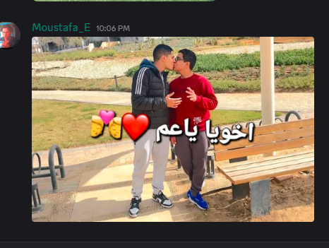
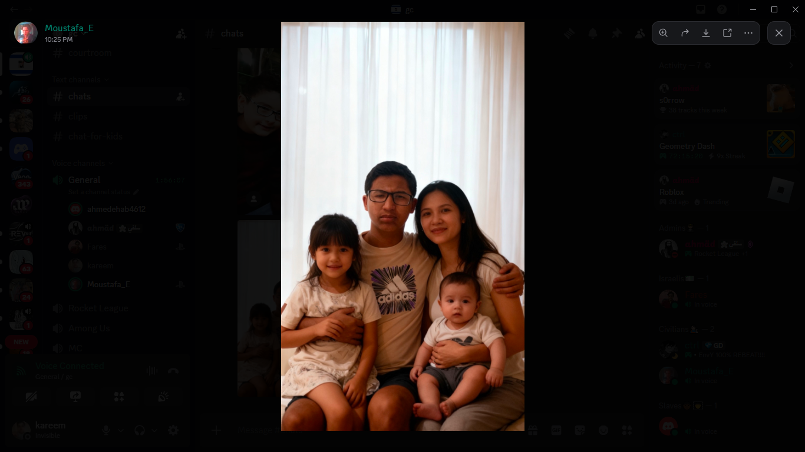

مقدمة أمام هيئة القضاء العليا وإدارة سيرفر GC الموقرة
⚖️
رقم القضية: Case GC-CRIM-2026-002
تاريخ التقديم: 13 أكتوبر 2026
المدعي (المجني عليه): العضو / كريم (Karim)
حالة الدعوى:دعوى جنائية كبرى عاجلة
المتهم: العضو / مصطفى إيهاب (حساب: Moustafa_E)
المرجع الدستوري: مادة صور الذكاء الاصطناعي ومبدأ الوقائع والمادة (4)
بيان التهم المنسوبة إلى المتهم (مصطفى إيهاب):
جرائم من الدرجة الأولى
1. التحرش اللفظي ونشر محتوى ذي إيحاءات شاذة وإهانة علنية في القنوات العامة.
2. مخالفة المادة الدستورية الصريحة بحظر فبركة ونشر صور الأعضاء بواسطة الذكاء الاصطناعي (AI).
3. انتهاك حرمة الحياة الخاصة واستغلال صور أفراد عائلة المدعي وأطفال رُضَّع وقُصَّر وفبركتها دون إذن.
4. التهديد الصريح والابتزاز الموثق بالصوت لمنع المدعي من اللجوء للعدالة وسلب حقه الدستوري في الشكوى.
أولاً
سرد الوقائع وملابسات الجريمة
1. واقعة التحرش اللفظي والإيحاءات الشاذة العلنية:
أقدم المتهم "مصطفى إيهاب" على نشر صورة مفبركة ومركبة علناً داخل ديسكورد (الساعة 10:06 مساءً) تُظهر رجلين يقبلان بعضهما في حديقة عامة، مُرفقاً معها رموز قلوب وعبارة "اخويا ياعم"؛ وهو سلوك يمثل تحرشاً لفظياً صريحاً، وتنبيهاً لإيحاءات شاذة مرفوضة شرعاً وعرفاً، قاصداً بذلك التشهير بالمدعي والحط من كرامته أمام مجتمع السيرفر.
2. واقعة التعدي على خصوصية الأسرة واستخدام الذكاء الاصطناعي:
تجاوز المتهم كافة الخطوط الحمراء الأخلاقية بقيامه بتركيب وتوليد صورة مفبركة بالذكاء الاصطناعي لعائلة المدعي تضم زوجة وأطفالاً رُضَّعاً وقُصَّر، ملصقاً وجه المدعي عليها؛ وهو ما يشكل انتهاكاً صارخاً لحرمة المنازل والحياة الأسرية الخاصة وتداول محتويات غير مرخصة تمس الأعراض والأطفال.
عقب شروع المدعي في اتخاذ الإجراءات التأديبية المشروعة، بادر المتهم بإرسال رسائل صوتية واضحة ومسجلة (مرفقة بالدعوى) تتضمن تهديداً صريحاً للمدعي بالانتقام وتصعيد التشهير في حال قيامه برفع أي قضية ثانية ضده؛ وهي محاولة إجرامية لترهيب المجني عليه وسلب حقه الدستوري في الشكوى المنصوص عليه في المادة الرابعة.
ثانياً
الأدلة والمستندات المادية القاطعة المرفقة
📷 الدليل الصوري رقم (1): سكرين شوت التحرش اللفظي من ديسكورد (روم #chats)توثيق رسمي بالدقيقة (الساعة 10:06 م)
لقطة شاشة كاملة وموثقة من داخل سيرفر GC تثبت قيام حساب المتهم الرسمي (Moustafa_E) بنشر الصورة ذات الإيحاءات الشاذة والتعدي اللفظي المباشر وعبارة "اخويا ياعم":

👨👩👧👦 الدليل الصوري رقم (2): سكرين شوت نشر صورة العائلة بالذكاء الاصطناعي في ديسكوردتوثيق رسمي بالدقيقة (الساعة 10:25 م)
لقطة شاشة كاملة وموثقة من داخل سيرفر GC (روم #chats) تثبت قيام المتهم (Moustafa_E) بنشر الصورة المفبركة بالذكاء الاصطناعي التي تنتهك حرمة أسرة المدعي وأطفاله القُصَّر علناً:

🎧 الدليل الصوتي رقم (3): تسجيل صوتي يثبت التهديد والابتزاز الصريحتسجيل صوتي مادي مباشر
تسجيل صوتي للمتهم يهدد فيه المدعي صراحة في حال رفعه لأي قضية ثانية أمامه أمام القضاء، ومحاولة إرهابه لتعطيل العدالة:
ثالثاً
الأساس الدستوري والقانوني للإدانة
1. المادة الدستورية الصريحة بحظر صور الذكاء الاصطناعي:
«No member shall create, publish, share, distribute, or otherwise circulate any AI-generated nude image depicting a GC server member... Any violation of this Article shall result in disciplinary action in accordance with the GC Constitution.»
خالف المتهم هذا الحظر الدستوري القاطع بتوليد ونشر صور مفبركة بالذكاء الاصطناعي تمس الأعضاء وعائلاتهم، وهو ما يوجب تطبيق الجزاء التأديبي المنصوص عليه.
2. إعمال "مبدأ الحكم بالوقائع المادية" (Principle of Factual Judgment):
«يجب أن تُبنى القرارات والعقوبات حصراً على ما حدث فعلياً، والوقائع الثابتة، والأدلة المتاحة، لا على النوايا المفترضة أو التفسيرات الشخصية.»
الأدلة المقدمة في هذه الدعوى قطعية ومادية ملموسة (تسجيل صوتي قائم + سكرين شوت من حساب المتهم + صور مفبركة)، ولا تدع مجالاً للشك أو التخمين، مما يوجب الإدانة الفورية للمتهم.
3. كفالة حق التقاضي وتجريم ترهيب المشتكين (المادة الرابعة):
تكفل المادة الرابعة من الدستور حق كل عضو في اللجوء للقضاء لحل النزاعات، وتجريم أي محاولة لتهديد الشاكي أو ابتزازه لتعطيل مرفق العدالة.
🏛️ رابعاً: الطلبات والعقوبات التأديبية الملتمسة
يلتمس المدعي (كريم) من هيئة القضاء العليا وإدارة سيرفر GC الموقرة الحكم بالآتي:
أولاً: قبول صحيفة الادعاء شكلاً لاستيفائها كافة الأركان القانونية والأدلة المادية.